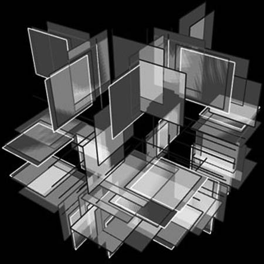
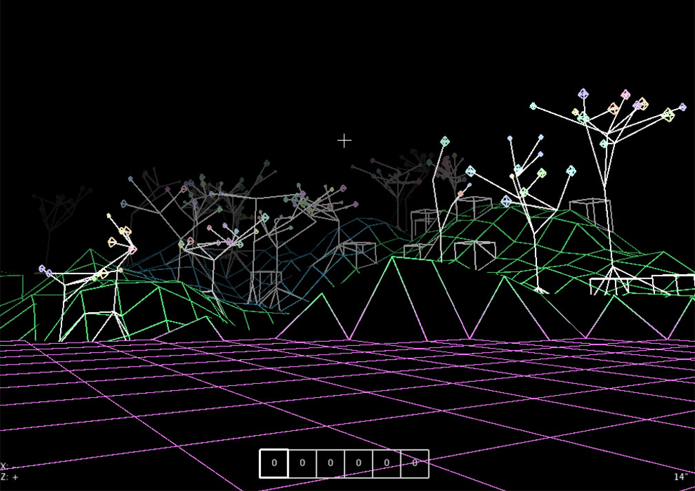
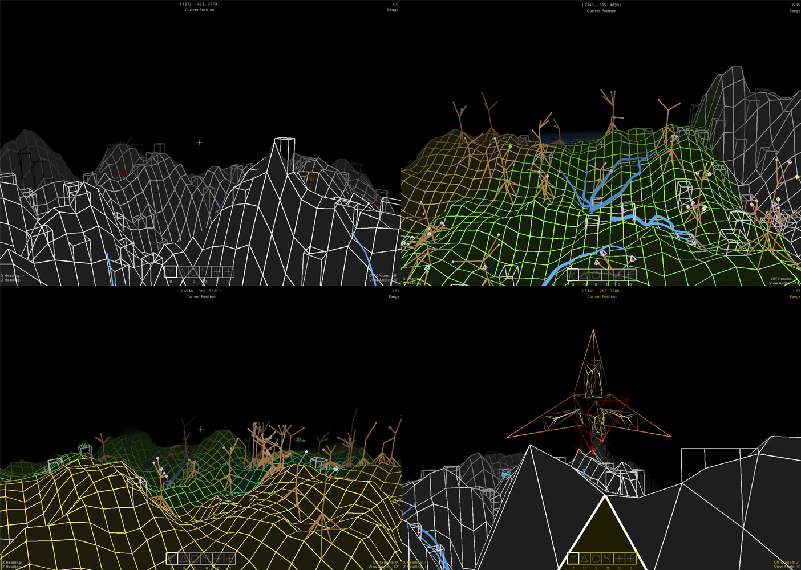

Synthetica was originally concieved as a term project for 15-112, with the goal of developing a basic software project in Python that provided user interactivity and focused on extensibility and algorithmic complexity. I was intrigued by the idea of simulating complex systems through the composition of a number of simple rules. To that end, Synthetica provides a sandbox to experiment with those rules.
The main project is an open-world 3D sandbox, with procedurally generated terrain, biomes that influence terrain features, and fractal-esque creatures and resources that inhabit and react to their surroundings. In its current state, the player is able to interact and feed creatures and resources to adjust creature preferences. There is, as of yet, no overarching story - just some fun in seeing the creatures grow to greater and greater levels of complexity.
[-] Synthetic World - Early Biomes

The project makes use of stylised graphics to create consistent, simple representations for most objects within the game. We can see the terrain difference between mountainous regions, the added density of streams and trees in more rainy areas, and the surrounding presence of vast deserts and oceans.
[-] Synthetic World - Biomes and Creatures

When it comes to living creatures, the graphics increase in complexity. Creatures often contain animations and, at higher "power" levels, naturally recurse and take on forms with many interacting elements. Creatures gain power through resources, living in a biome, and interacting with other creatures. They follow an objective-based AI, aiming to end up in an environmentally comfortable area and consume target resources.
[-] Creature Animation - Tetrahedral
[-] Creature Animation - Branching
Computationally, the most difficult part was maintaining real-time, interactive graphics with a fluid user-interface while still allowing features to be added. To this end, a large amount of terrain data is precomputed upon start and makes use of Python's native set and dictionary structures for constant lookup, and much of the out-of-view landscape is removed through a version of frustrum culling and dynamic viewport expansion by altitude. Lighting is calculated by distance. Creature AI was designed to be lightweight, utilising a system of priorities to minimise recomputing objectives and trajectories. As a result, even through Python's interpreted nature, the sandbox is able to achieve fluid framerates between 30-45 FPS with a medium draw distance on a mid-range integrated graphics unit. In early stages this was very beneficial, as Python allowed for a flexible, Object-Oriented design approach with very minimal bugs throughout the process.
The most interesting areas for future development include:
As part of this, the project is being redeveloped using OpenGL and GLM for precise control over graphics and performance benefits.
Synthetica owes inspiration to the work done by Scott Draves on Electric Sheep, the popular games Minecraft and No Man's Sky, as well as the never-ending amount of cool experiments and doodles floating around in the procedural generation community on the internet.
Source code for the original Python version can be found here.
[-] Creature Animation - Chaotic Attractor
[+] Creature Animation - Orbiting
made with love and html. © Dan Cascaval, All rights reserved.